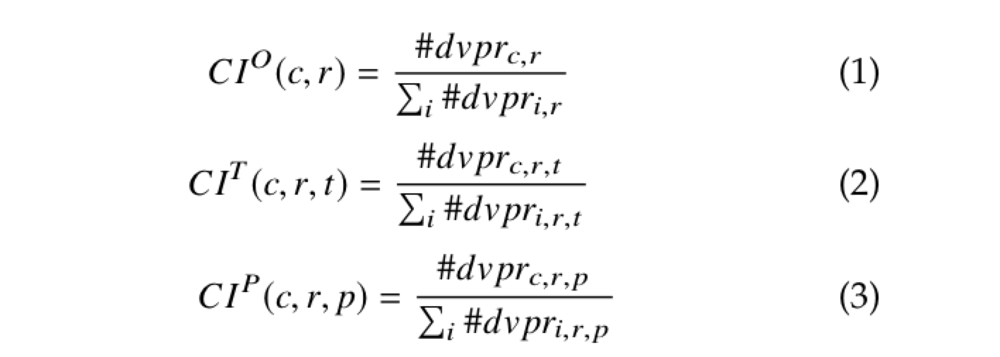
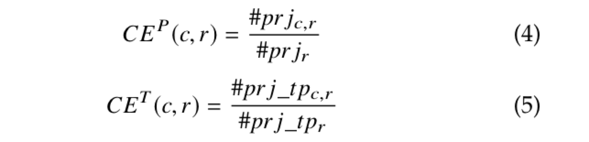
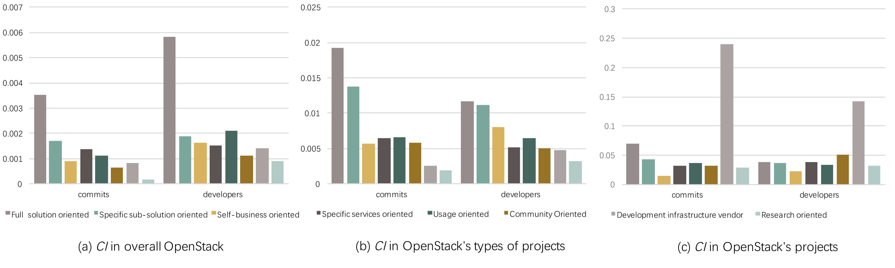

<script src='js/header.js'></script>
    <main role="main">

      <section class="jumbotron text-center">
        <div class="container" style="max-width:800px">
          <h1 class="jumbotron-heading" style="margin-bottom:30px">Commercial Participation in OSS Ecosystems</h1>
          <p class="lead text-muted" style="font-size: 19px; text-align: left; margin-top:50px">
          Commercial participation continues to grow in open source software (OSS) projects and novel arrangements appear to emerge in company-dominated projects and ecosystems. What is the nature of these novel arrangements? Despite extensive research on commercial participation in OSS, the exact nature and extent of company contributions to development has not been clarified. To brige the gap, We provide a dashboard that can be used to extract commercial contribution model. First, we quantify companies' contributions to via the developers that they provide and the commits made by those developers. Second, we define four dimensions that can characterize commercial participation in OSS, i.e., commercial objectives, and contribution intensity, extent, and focus. Our dashboard can improve the understanding of the nature and extent of commercial participation in company-dominated OSS ecosystems, and provides a basis to further explore the effects of commercial participation to the health of OSS ecosystem.
          </p>
          <p class="lead text-muted" style="font-size: 21px; text-align: left; font-weight:bold; margin-top:50px>Discovering and Characterizing Contribution Models"> Discovering and Characterizing Contribution Models</p>
          <p class="lead text-muted" style="font-size: 19px; text-align: left; font-weight:bold; margin-top:50px>Extracting commercial objectives"> Extracting commercial objectives:</p>
          <p class="lead text-muted" style="font-size: 19px; text-align: left; margin-top:5px"> Commercial objectives refer to the motivation of a company to join an OSS ecosystem. To obtain the commercial objectives of the involved companies, we entered company's name plus the OSS ecosystem's name in Google search engine, visited the top 20 links to explore the company's commercial objectives, and collected the related online records. We stopped when companies had insufficient online data and we were unable to obtain their commercial objectives. 

          We analyzed these records to obtain the categories of commercial objectives by using thematic analysis. The process mainly involves five steps: (1) initial reading of the records, (2) generating initial codes for each record, (3) searching for themes among the proposed codes, (4) reviewing the themes to find opportunities for merging, and (5) defining and naming the final themes. Steps (1) to (4) were performed independently by the first two authors. After this, a sequence of meetings should be held to resolve conflicts and to assign the final themes (step 5). When the first two authors fail to reach an agreement on a particular code or theme, we use the third author as an arbitrator. This process can reveal several themes of a wide variety of companies' commercial objectives. We considered companies with the same theme to be in the same contribution model, labeled by the theme.   
          </p>
          <p class="lead text-muted" style="font-size: 19px; text-align: left; font-weight:bold; margin-top:50px>Characterizing the performance of contribution models"> Characterizing the performance of contribution models</p>
          <p class="lead text-muted" style="font-size: 19px; text-align: left; margin-top:5px"> <strong>Dimension 1: Contribution intensity</strong> (denoted as CI) is used to characterize the degree of a company's contributions to an OSS ecosystem compared to other companies. We define a company's CI as a ratio of the contributions contributed by the company to the total contributions at three levels, where the contributions are calculated both in developer (denoted as 'dvpr') and in commit (denoted as 'cmt') terms. Due to space constraints, we only show the CI formulas in developer terms: </p>
          
          <p class="lead text-muted" style="font-size: 19px; text-align: left; margin-top:5px"> <strong>Dimension 2: Contribution extent</strong> (denoted as CE) explains the scope of a company's contributions to OpenStack, focusing on the levels of project and project type. We define a company's 'CE' as a ratio of the number of projects or project types contributed by the company to the total number of projects or project types in OpenStack: </p>
          
          <p class="lead text-muted" style="font-size: 19px; text-align: left; margin-top:5px"> <strong>Dimension 3: Contribution focus</strong> (denoted as CF) refers to the type of projects to which a company makes the most contributions. To obtain the contribution focus of a company, we sorted the project types by the number of commits made by the company, recorded the first type in each release, and counted the number of occurrences of each type over all releases. The most frequently occurring type was treated as the company's contribution focus. 
          For each contribution model, we counted the number of occurrences of its companies' focus and considered the most frequent type as the model's contribution focus. </p>
          <p class="lead text-muted" style="font-size: 21px; text-align: left; font-weight:bold; margin-top:50px>Results of OpenStack Case"> Results of OpenStack Case</p>
          
          
          <p class="lead text-muted" style="font-size: 19px; text-align: left; margin-top:5px"> More details:
          <p class="lead text-muted" style="font-size: 19px; text-align: left; margin-top:5px"> Download:
          <a href="https://github.com/noname2018/Dataset-of-Company-Participation-in-OpenStack">Dataset</a> 
          </p>
          <p class="lead text-muted" style="font-size: 16px; margin-top:50px">Papers: </p>
          <p class="lead text-muted" style="font-size: 16px; font-style:italic; text-align: left">
          Zhang Y, Tan X, Zhou M, et al. Companies' domination in FLOSS development: an empirical study of OpenStack[C]//Proceedings of the 40th International Conference on Software Engineering: Companion Proceeedings. ACM, 2018: 440-441.
          </p>
        </div>
      </section>
<script src='js/footer_en.js'></script>
